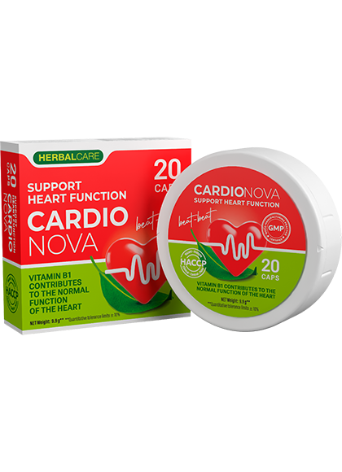

Хипертонията може да не се появи с години. Високото кръвно налягане обикновено е свързано с умора, времето или определено телесно състояние. Когато се появят главоболие, безсъние или задух, последното нещо, което идва на ум, са проблеми със сърцето. "Добре съм. Просто навън е горещо - каза майка ми, докато си поемаше дъх.
В този ден едва успяхме да я спасим ... Около 2 месеца преди инфаркта майка ми започна да се оплаква от главоболие. Въпреки всичко това кръвното беше ниско - 135/90. В деня, в който получи инфаркт, тя се почувства страхотно и дори отиде да пазарува. По-късно ми се обадиха от болницата и ми казаха, че е в реанимация. Слава Богу, всичко се получи.
Възстановяването беше много дълго и всеки момент можеше да се повтори инфаркт. Кръвното все още беше 150/95. От големия брой взети хапчета резултатите от изследванията бяха много лоши и застрашени от бъбречна недостатъчност. Трябваше спешно да намалим броя на хапчетата, които приемаме. Но как? В крайна сметка без тях състоянието на майка ми веднага се влоши рязко.
Кардиологът д-р Йордан Черкезов обясни, че лекарствата не трябва да се спират веднага. Необходимо е да се почистят съдовете и да се укрепят. Само след това можете постепенно да намалите дозата на лекарствата. За почистване и укрепване на кръвоносните съдове на майка ми беше предписан Cardio Nova.
След курса майка ми се почувства много по-добре. Тя започна да се събужда бодра и вече не чувстваше главоболие. Освен това тя вече нямаше задух, умора или болки в гърдите. Общото състояние се подобрява, изследванията показват нормален холестерол. Дозировката се намалява постепенно. Шест месеца по-късно, по съвет на кардиолог, майка ми взе друг курс на Cardio Nova.